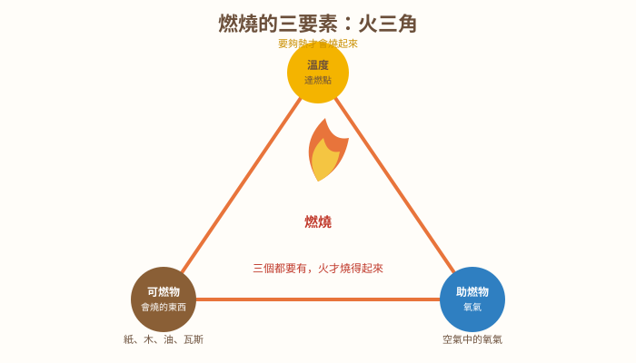
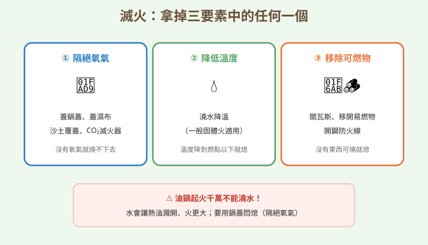
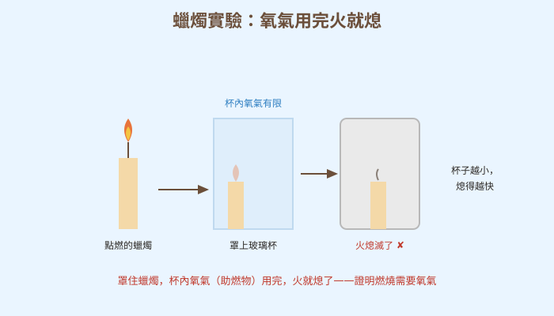
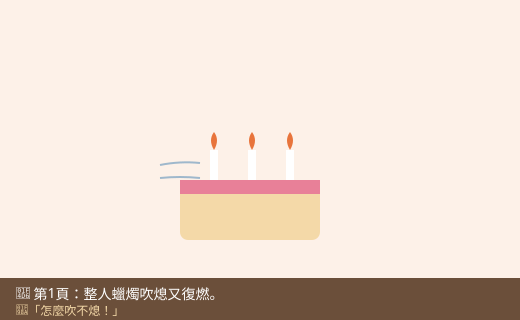
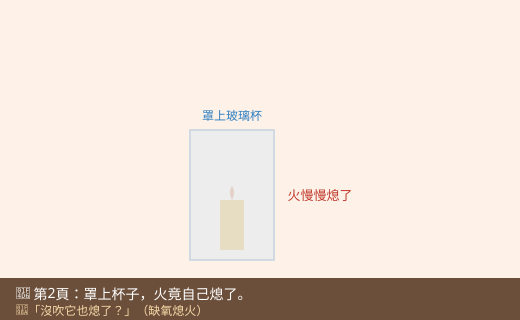
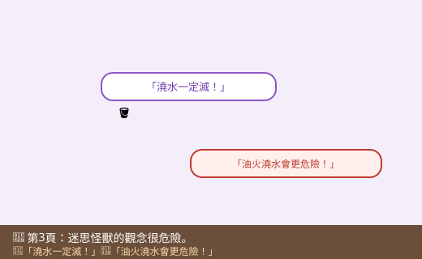
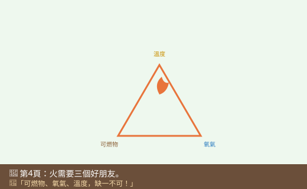
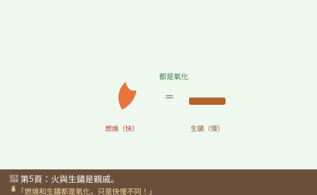
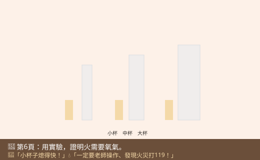

圖一（概念總覽圖）：火三角

- 圖像目的
- 建立「燃燒需三要素同時到齊」的核心概念。
- 圖中應出現的元素
- 三角形三個頂點：可燃物、助燃物（氧氣）、溫度（達燃點）；中央火焰。
- 必須標示的科學概念
- 三要素缺一不可；助燃物是氧氣、溫度需達燃點。
- 圖說
- 「三個都要有，火才燒得起來。」
- AI 繪圖提示詞
- 溫暖手繪科普風，一個三角形三頂點分別標可燃物、助燃物（氧氣）、溫度（達燃點），中央畫火焰。繁體中文。
- 避免畫錯的提醒
- 助燃物寫「氧氣」；溫度強調「達燃點」；三者並列缺一不可。
💡 火不是憑空冒出來的——它需要三個好朋友到齊，才點得著、燒得旺！
| 適合年級 | 國小五年級 |
|---|---|
| 可銜接年級 | 五年級 → 國中氧化反應 |
| 主題分類 | 物質、熱與變化 |
| 核心概念 | 燃燒三要素（可燃物、助燃物、溫度）；滅火原理 |
| 關鍵詞 | 燃燒、火三角、可燃物、助燃物、氧氣、燃點、滅火 |
| 可銜接的國中概念 | 氧化反應、燃燒與氧化還原 |
| 建議閱讀時間 | 約 20 分鐘 |
| 適合搭配的課堂活動 | 蠟燭罩杯熄火觀察、滅火方法討論 |
甲蟲博士的生日到了！大家圍著蛋糕唱生日快樂歌，小狐同學負責點蠟燭。可是這次博士偷偷準備了幾根「整人蠟燭」——小狐同學鼓起腮幫子，用盡全力「呼——」地一吹，蠟燭火焰晃了一下，居然又「啵」地重新燃起來！他一連吹了好幾次，那幾根蠟燭就是死不熄滅，急得他滿頭大汗。
「怎麼會這樣？我明明吹得很用力啊！」小狐同學不服氣。後來大家改用杯子把蠟燭一個個罩起來，神奇的是——被杯子罩住的蠟燭，沒有人去吹，火焰卻慢慢變小，最後「咻」地自己熄掉了！而且他還發現，用小杯子罩的熄得快，大杯子罩的熄得比較慢。
小狐同學看得目瞪口呆：「用力吹都吹不熄，罩個杯子什麼都不用做，火反而自己熄了？這也太奇怪了！火到底是靠什麼在燃燒？又是為什麼熄掉的？」他盯著那些冒著白煙的燭芯，滿腦子問號。
黑熊老師端來一鍋熱可可，笑著說：「小狐，火看起來很神祕，其實它很守規矩。火要燒起來、燒下去，需要『三個好朋友』同時到場，我們叫它『火三角』。剛剛你罩杯子，就是偷偷把其中一個朋友請走了，火自然就撐不下去。我們來把這三個好朋友一個一個認出來，你就會變成滅火高手！」
黑熊老師，火到底需要什麼才能燒起來？
燃燒需要三樣東西同時到齊，我們叫「火三角」：第一是「可燃物」——會燒的東西，像紙、木頭、蠟、瓦斯；第二是「助燃物」——主要是空氣中的「氧氣」；第三是「溫度」——要夠熱、達到會著火的溫度（燃點）。
那我罩杯子讓蠟燭熄掉，是拿走了哪一個？
你拿走了「氧氣」！杯子把蠟燭和外面的空氣隔開，杯裡的氧氣被火慢慢用完，沒有氧氣（助燃物），火就撐不下去、自己熄了。所以小杯子氧氣少，熄得快；大杯子氧氣多，撐得久一點。
哼，火要熄掉，當然是「用力吹」或「拿水澆」最快啦！不管什麼火，只要澆水一定馬上滅，這是常識！
迷思怪獸這個觀念很危險！澆水對一般的火（像紙、木頭）有用，因為水能降溫。但「油鍋起火」絕對不能澆水——水會讓滾燙的油爆濺開來，火反而燒得更大更危險！油鍋起火要蓋鍋蓋，把氧氣隔絕才對。
好可怕！那滅火到底有什麼原則？
很簡單：只要「拿走火三角其中任何一個」，火就會熄。移走可燃物（關瓦斯）、隔絕氧氣（蓋鍋蓋、蓋濕布）、或降低溫度（一般固體火澆水），都能滅火。滅火器也是用這些原理。
補充一個重要觀念：燃燒其實是一種「氧化」——東西和氧氣結合、又快又猛地放出光和熱。還記得鐵生鏽嗎？那也是氧化，只是慢慢來、不冒火。燃燒和生鏽是「親戚」，只是脾氣一個急、一個慢。
燃燒有危險，這個實驗一定要由老師操作、我們在旁觀察：用不同大小的杯子罩住點燃的蠟燭，記錄熄滅的時間，就能證明「氧氣越少、火熄得越快」。絕對不可以自己玩火，發現火災要趕快離開並找大人、打119！
火要燒起來，需要三樣東西同時到齊，叫火三角：可燃物（會燒的東西，如紙、木、蠟）、助燃物（空氣中的氧氣）、溫度（要夠熱、達到燃點）。只要拿走其中一個，火就會熄。所以滅火有三招：移走可燃物、隔絕氧氣、降低溫度。特別注意：油鍋起火不能澆水，要蓋鍋蓋。
燃燒需要三要素同時存在（火三角）：可燃物、助燃物（氧氣）、以及達到燃點的溫度。缺一不可，去除任一項即可滅火：移除可燃物、隔絕氧氣、冷卻降溫。不同火災要用對方法——一般固體火可用水冷卻；油類火與電器火不可用水（油會濺開、電會導電觸電），要用覆蓋隔氧或適用的滅火器。燃燒是氧化反應，物質與氧結合並放出光和熱，與生鏽同屬氧化，差別在速率。
燃燒是劇烈的氧化反應，可燃物與氧化劑（通常是氧氣）反應放出大量光與熱。維持燃燒需可燃物、助燃物與達燃點溫度，並有連鎖反應（有時以「火四面體」表示，加入連鎖反應）。滅火即中斷其一：隔離、窒息（隔氧）、冷卻或抑制連鎖反應。火災分類（A 普通固體、B 油類、C 電氣、D 金屬等）對應不同滅火劑。國中將以氧化還原、反應熱與化學計量進一步探討燃燒與能量。









| 適合年級 | 五年級（務必由老師操作，學生觀察記錄） |
|---|---|
| 材料 | 短蠟燭 3 根、耐熱盤、大中小玻璃杯各 1、打火機（老師持有）、碼表、紀錄表、濕抹布（備用） |
罩住蠟燭的杯子大小（杯內氧氣量）。
蠟燭從被罩到熄滅所花的時間。
蠟燭種類與大小、火焰起始狀態、罩下的時間點一致。
| 杯子大小 | 熄滅時間 | 快或慢 |
|---|---|---|
| 小杯 | ||
| 中杯 | ||
| 大杯 |
小杯子的蠟燭熄得最快，大杯子撐得最久。因為杯子把蠟燭和外界空氣隔開，火只能用杯裡的氧氣；杯子越小，裡面的氧氣越少，火很快就把氧氣用完而熄滅。這證明燃燒需要氧氣（助燃物），也示範了「隔絕氧氣」可以滅火。
⚠️ 安全提醒：本實驗涉及明火，一定要由老師或家長操作，學生只在安全距離觀察，絕對不可自己玩火。操作時綁好長髮、遠離易燃物、備妥濕抹布；玻璃杯罩後會變熱，勿徒手久拿。發現火災請立刻離開現場、通知大人、撥打 119，不要自行冒險滅火。
👾 迷思說法：任何火，只要澆水就一定能滅。
為什麼容易誤解：水能滅一般的火，就以為對所有火都有效。
✅ 正確說法：油鍋火、電器火都不能澆水！水會讓熱油爆濺、火更大，或造成觸電。油火要蓋鍋蓋隔氧，電火要先斷電、用合適滅火器。
可以怎麼驗證：查看消防單位的宣導：不同火災要用不同方法，油火示範用鍋蓋而非水。
👾 迷思說法：只要有可以燒的東西，火自己就會燒起來。
為什麼容易誤解：覺得可燃物就是「會自己著火」。
✅ 正確說法：光有可燃物還不夠，還要有氧氣和足夠的溫度（達燃點）。三者到齊火才燒得起來。
可以怎麼驗證：紙放在桌上不會自己燒，要有火源（溫度）與空氣（氧氣）才行。
👾 迷思說法：把蠟燭罩起來，火是「被悶死/沒空間」才熄的。
為什麼容易誤解：覺得杯子太小把火「壓熄」。
✅ 正確說法：火熄是因為杯內的「氧氣」被用完了（助燃物不足），不是因為沒有空間或被壓住。
可以怎麼驗證：大杯子空間大、氧氣多，火撐得比較久；杯子大小改變的其實是氧氣量。
👾 迷思說法：燃燒和生鏽是完全不同的兩回事。
為什麼容易誤解：一個轟轟烈烈、一個安安靜靜，看起來毫不相關。
✅ 正確說法：兩者都是「氧化」——都和氧氣結合。差別是燃燒又快又猛、放出光和熱；生鏽很慢、不冒火。它們是親戚。
可以怎麼驗證：國中會學到，燃燒與生鏽同屬氧化反應，只是速率不同。
👾 迷思說法：火越大，用力吹就一定能吹熄。
為什麼容易誤解：吹得熄小蠟燭，就以為對大火也有效。
✅ 正確說法：吹小火能把熱氣帶走、降溫熄滅；但對大火用吹（甚至搧風），反而送進更多氧氣、讓火更旺。大火絕不能靠吹或搧。
可以怎麼驗證：營火想燒旺時，人們會「搧風」送氧氣——這正好說明搧風會助長火勢。
1. 「火三角」指的是燃燒需要哪三要素？
(A) 水、火、風 (B) 可燃物、助燃物、溫度 (C) 光、電、磁 (D) 紙、木、油
答案：B。可燃物、助燃物（氧氣）、達燃點的溫度。
2. 用杯子罩住蠟燭，火熄滅是因為拿走了哪一個要素？
(A) 可燃物 (B) 氧氣（助燃物） (C) 溫度 (D) 蠟
答案：B。杯內氧氣用完，火就熄了。
3. 下列哪一種火「不可以」用水澆滅？
(A) 紙張起火 (B) 木頭起火 (C) 油鍋起火 (D) 落葉起火
答案：C。油火澆水會爆濺更危險，要蓋鍋蓋隔氧。
4. 燃燒其實是一種什麼反應？
(A) 蒸發 (B) 溶解 (C) 氧化 (D) 凝固
答案：C。燃燒是與氧氣結合的氧化反應。
5. 發現家裡發生火災，最正確的做法是？
(A) 自己想辦法滅大火 (B) 躲進房間 (C) 趕快離開、通知大人、打119 (D) 先拍照
答案：C。安全第一，儘速逃生並求救。
1. 燃燒需要哪三個要素？請寫出來。
可燃物、助燃物（氧氣）、達到燃點的溫度。
2. 為什麼油鍋起火不能澆水？應該怎麼做？
因為水會讓滾燙的油爆濺開來，火反而更大更危險；應該蓋上鍋蓋隔絕氧氣把火悶熄。
3. 滅火的基本原理是什麼？舉一個方法說明。
拿掉火三角其中一個要素即可滅火。例如蓋鍋蓋隔絕氧氣、關瓦斯移除可燃物、對固體火澆水降溫。
1. 露營時想把營火升得更旺，有人會對著火堆搧風。這和「吹熄蠟燭」看起來矛盾，你能解釋為什麼嗎？
吹小蠟燭是把火焰附近的熱氣帶走、降溫使它熄滅；對大營火搧風則是送進更多氧氣（助燃物），讓火燒得更旺。差別在於火的大小與「帶走熱」還是「送進氧氣」哪個效果佔上風。體會火三角中氧氣與溫度的作用。
2. 太空站裡也可能失火。在幾乎沒有重力的環境，火焰的樣子和地球上不一樣（呈圓球狀、較弱）。你能用「燃燒需要氧氣」推測為什麼嗎？
地球上熱空氣會上升、把新鮮含氧空氣帶到火焰，讓火拉長燒旺；無重力時沒有這種對流，氧氣不易補充到火焰周圍，火只能靠緩慢擴散得到氧氣，所以呈球狀、較微弱。連結「燃燒需氧氣」與空氣流動。（此為引導推論，屬進階延伸）
| 向度 | 待加強（1） | 通過（2） | 優秀（3） |
|---|---|---|---|
| 概念理解 | 不清楚燃燒條件 | 能說出火三角 | 能連結滅火原理與氧化 |
| 變因與推論 | 未能推論氧氣作用 | 能由實驗推論需氧氣 | 能解釋杯子大小與氧氣量關係 |
| 安全素養 | 有危險用火觀念 | 知道油火不澆水、火災逃生 | 能正確判斷不同火災處置 |
| 檢核項目 | 結果 | 備註 |
|---|---|---|
| 科學概念是否正確 | ✅ | 火三角、滅火去除其一、油火不澆水、燃燒為氧化、與生鏽同屬氧化，敘述正確。 |
| 是否符合年級理解程度 | ✅ | 五年級以示範實驗與生活切入，火四面體與計量留待國中。 |
| 是否有錯誤或過度簡化的比喻 | ✅ | 「三個好朋友」比喻恰當；已澄清火非被壓熄、非任何火都能澆水。 |
| 是否清楚區分觀察、推論與解釋 | ✅ | 以觀察熄滅時間為據，解釋以氧氣量。 |
| 圖像提示詞是否可能造成誤解 | ✅ | 助燃物標氧氣、油火警告明確、火因缺氧而熄。 |
| 實驗是否安全 | ✅ | 明火由老師操作、學生觀察，充分安全提醒與火災逃生指引。 |
| 是否需要補充資料來源 | ✅ | 對應 INe-Ⅲ-3；火災分類與滅火器適用建議引用消防署資料。 |
| 是否適合轉成 HTML 網頁 | ✅ | 結構完整，含互動測驗與摺疊區。 |